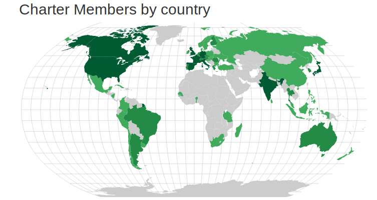
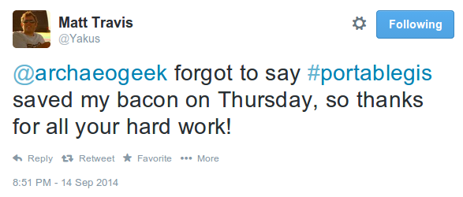

Jo Cook (founder and chair)
OSGeo == The Open Source Geospatial Foundation
OSGeo:UK == The Open Source Geospatial Foundation UK Local Chapter
OSGeo is a global foundation with a mission to support open source software and people that use it
Pexel CC0There are ~30,000 members world-wide, ranging from developers to users, global corporations to individuals
 Jorge SanzOSGeo's role also includes promoting sustainable, properly-licensed software, like QGIS and PostGIS, and also supporting smaller packages such as pgrouting and Loader
Come to the OSGeo:UK AGM, at 1pm today in the Turret Room to find out more!
A couple of quotes to sum up OSGeo and FOSS4GUK
If you think you're too small to have an impact, try going to bed with a mosquito in the room
Anita Roddick
By using the software, and taking the time to come to this event, you have an impact
Behind piece of software and conference is a real person
Your thanks and contributions, however small, may be just the thing that inspires someone to keep going
On which note, massive thanks to the sponsors, organising commitee, and most importantly, to you all for coming along to the event
Finally...
Be excellent to each other!
Abraham Lincoln, 1988
...and enjoy the event!
(thanks)